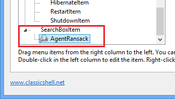

经典开始菜单
经典开始菜单
经典开始菜单
是一个灵活的开始菜单,可以模仿Windows的菜单
2000、XP和Windows 7。它有各种各样的高级特性:
- 选择“经典”和“Windows 7”风格
- 拖拽到让你组织你的应用程序
- 选项来显示收藏夹,扩大控制面板等
- 显示最近使用文档。文档的数量来显示
是可定制的
- 翻译成35种语言,包括从右到左的支持
阿拉伯语和希伯来语
- 没有禁用原来的开始菜单在Windows。你可以
访问它通过Shift +点击开始按钮
- 右键单击菜单中的项进行删除、重命名、分类,或
执行其他任务
- 搜索框可以帮助你找到你的项目和文件没有妨碍你的键盘快捷键
- 支持跳转列表,方便地访问最近的文档和普通任务
- 支持32位和64位操作系统
- 支持皮肤,包括额外的第三方皮肤。让你自己!
- 完全可定制的外观和功能都
- 支持Microsoft 活跃可访问性
- 转换&;所有程序,按钮在菜单里一个级联菜单
- 实现了一个可定制的启动按钮< br >
- 可以显示、搜索和发射窗口存储应用程序(Windows 8)
- 最后但并非最不重要;它是免费的!
风格
开始菜单中提供了3种风格可以选择.
1) 单列经典风格

这种风格是类似于菜单在Windows 2000。它有一个
在主菜单栏与垂直文本在侧。你可以
自定义的顺序,图标和文本.
程序,跳转列表和搜索结果显示作为级联子菜单.
2) 两列经典风格

这种风格是类似于Windows XP菜单。有两列
你可以安排你的菜单项。定制订单,图标和
文本.
程序,跳转列表和搜索结果显示作为级联子菜单.
3) Windows 7 风格

这种风格是类似于Windows Vista和Windows 7的菜单。这个
项目在第一列是预定义的,固定和最近的
项目,所有项目列表和搜索框。这个项目在第二
列是完全可定制的。
跳转列表和搜索结果的显示在主菜单。这个
项目可以在主菜单或开放作为一个级联子菜单。< br >
这种风格提供了更少的定制选项比经典的风格,但是
有外观和感觉更熟悉的人用于Windows 7.
操作
如果你有使用开始菜单在老版本的Windows你们#
感觉像在家里一样:
按下Windows键或点击orb的角落
屏幕打开开始菜单.
按住Shift键的同时点击orb访问操作
系统自身的
开始菜单.
点击一个条目来执行它。
拖动一个程序来改变秩序的项目在一个菜单,或
将其移至另一个文件夹。
右键点击一个条目来重命名,删除它,探索它,排序
菜单,或执行其他任务.
右键单击orb编辑的设置开始菜单,查看此帮助文件,或
停止开始菜单。
设置
右键单击开始按钮来访问设置:
你可以选择只看到基本的设置,或所有可用的
设置。鼠标悬停在每个设置看描述是用来干嘛的。输入搜索框找到设置的名字。< br >
每一个设置有一个默认值。默认值可以是常数,
或者它可能取决于当前的系统设置。一旦你编辑一个
设置它就变成了“修改”,并以粗体显示。要恢复到
默认值,右键单击设置.
你可以保存设置到一个XML文件,以及后来的负载他们回来。
按备份按钮来访问这些功能。从那里你可以
也重置所有设置到他们的默认值.
大多数设置将改变当你编辑他们立即。例如
您可以编辑开始菜单,然后在设置对话框是开放的,
访问开始菜单来查看更改。小数量的设置
要求你退出开始菜单才能看到改变.
提示: 所有设置窗口可调整大小的。通过调整它们,将它们在你想要的。他们会记住新的位置.
点击 自定义开始菜单 选项卡来定制菜单项。根据不同的风格你会看到不同的UI.
你可以定制的经典风格的两列开始菜单和
创建子菜单。左列显示当前菜单项
和正确的列显示可用的菜单项。拖动从
右到左到添加项菜单.
对Windows 7的风格你只能编辑项为第二列和没有子菜单.
双击图标编辑项属性:
在这里你可以选择一个命令的项目,其文本、图标和其他属性。按 恢复默认值 按钮来得到默认的文本和图标选择命令.
命令可以:
- 一个预定义的命令 - 从下拉
- 自定义可执行字符串
- 这可以是一个名称的程序及其参数,或甚至一个URL
(like http://www.google.com). Environment variables like %SystemRoot% are supported
- left blank - 然后如果链接属性是使用,它将作为一个命令
这个链接可以是一个文件路径或一个文件夹。如果它是一个文件,
文件将被执行。如果它是一个文件夹,该文件夹将被打开,
一个子菜单。一些菜单项(如程序和收藏夹)有一个隐式的
链接属性,所以链接框将被禁用。
图标:
- 留空 - 然后如果链接属性指向一个文件或文件夹,图标的文件或文件夹将被使用
- 资源文件,icon ID - 例如 %windir%\notepad.exe,2. 不要忘了文件之间的名称和逗号. 确保您使用的是图标的资源ID,而不是图标的索引. 为了达到最好的使用效果 [...] 使用按钮图标组
- 图标 ID - 同上,但资源文件是 StartMenuDLL.dll 本身。这是有用的指开始菜单的图标
- 图标文件 - 例如 C:\Program Files\Mozilla Thunderbird\Email.ico
- none - 这将使用一个空白图标
如果标签或提示属性 $ (美元符号),那么系统将会把它作为一个字符串的名字 StartMenuL10N.ini
文件。实际的文本将取决于当前语言设置。这
当创建一个菜单是非常有用的,可以添加多个语言.
如果你检查“插入子条目作为按钮”,而不是显示菜单
项目本身,开始菜单将显示为一行目
按钮。默认情况下,按钮居中。你可以调整它们
左边添加一个分离器作为最后一个项目,或者向右对齐它们
通过添加一个分离器作为第一项。一个可能的用途是取代
关机菜单项
单独的按钮关机、重启、注销等.
管理员设置
这些设置是
每个用户和存储在注册中心。默认情况下每个用户都可以编辑
他们所有的设置。管理员可以锁定特定的设置,所以
没有用户可以编辑他们:

在这个例子中,设置“启用右键菜单“一直锁定,任何用户都不能改变。这是实现
通过添加设置 HKEY_LOCAL_MACHINE\SOFTWARE\OpenShell\Menu registry key. 创建一个 DWORD 值叫 "EnableContextMenu" 并且设置为 0.
在某些情况下,您可能不希望锁定为所有用户的值,只是修改初始值的设置。在这样的情况下添加“默认”名称的值。例如如果你想上下文菜单默认为禁用,但仍允许用户启用它,如果他们愿意,创建一个DWORD值命名为“EnableContextMenu_Default”并将它设置为0。
最简单的方式了解注册表名称的设置及其作用然后修改它,然后检查 HKEY_CURRENT_USER\Software\OpenShell\StartMenu\Settings.
有时你可能想锁定设置为默认值,但你
不知道默认值是。然后创建一个DWORD值和设置
它为 0xDEFA.
还有一个全局设置“EnableSettings”。将其设置为0的
注册表来防止用户打开设置对话框:
开始菜单也检查大部分的组策略设置的管理员。运行 gpedit.msc 找到 用户配置 -> 管理模板 -> 开始菜单和任务栏. 从那里你可以禁用运行,关闭,帮助,和其他功能. (不可以在家庭版本的Windows7).
更多关于皮肤
你可以选择从许多预装皮肤:

你也可以下载并安装额外的第三方皮肤(从
主要的网站或从另一个地方)。在你下载一个新的皮肤
你必须复制 .skin 文件到皮肤目录 通常 C:\Program
Files\Open-Shell\Skins. 之后,它将在设置里变为可用.
注意: 一些皮肤可能是专为
经典的、基本的、或Aero模式。例如一个Aero皮肤可能需要
玻璃支持任何看起来奇怪如果经典的或基本的主题
选定的。一些Aero皮也可能需要特定的玻璃颜色选择.
你可以创建你自己的皮肤。你将需要一个图像编辑器,该编辑器
支持alpha通道(如Gimp或Photoshop)和一个工具来编辑
资源文件(如Resource Hacker或Visual Studio)。当然,
一些人才为图形设计:)。阅读 Skinning Tutorial before you begin.
Search
搜索框允许您搜索的开始菜单的内容,
项目在PATH环境变量和索引文件。你可以搜索框
显示为一个普通的菜单项,然后您能使用
向上/向下箭头键。你可以选择搜索框选中
默认当你打开开始菜单。或者你可以选择激活
搜索框只与Tab键,所以直到你按Tab键你可以使用
键盘导航好像搜索框是不存在的.
搜索结果显示在主菜单中如果您使用的是Windows 7的风格或子菜单为经典的风格.
点击每个类别扩大它,看到更多的结果。点击图标查看所有结果结束在Explorer.
经典的款式让您注册附加“搜索提供商”,您可以使用它
搜索的文本搜索框。你运行搜索程序
无论是从菜单中选择,或通过
快捷Alt +键。在这个例子中使用 Alt+A for Agent Ransack.

这是通过添加SearchBoxItem 定制开始菜单 tab:

打开每个子条目,输入一个命令来启动搜索程序。如果你使用 %1 在命令时,它将被替换为搜索框的内容。如果你使用 %2
它将被换成了编码的url -风格的搜索文本。输入
标签,提示,和图标来完成你的菜单项。在标签文本你
可以使用 & 加速搜索 (例如 &Agent Ransack).
这里有一些可用的命令:
搜索使用 Agent Ransack: "C:\Program Files\Agent Ransack\AgentRansack.exe" -r -f "%1"
搜索使用 Everything: "C:\Program Files\Everything\Everything.exe" -search "%1"
搜索使用 Google: http://www.google.com/#q=%2
搜索使用 Bing: http://www.bing.com/search?q=%2
定制开始按钮
Open-Shell 可以添加自己的启动按钮到任务栏。它可以
甚至替换默认启动按钮在Windows 7。你可以选择从
一个航空风格orb,一个矩形经典按钮,或
你可以自己做。对于一个自定义的启动按钮您需要一个图像
包含3个状态的按钮——正常、获取焦点、按下:

图像必须是一个32位PNG或BMP。默认的宽度
图像确定按钮的大小。你可以覆盖到
进入一个自定义宽度.
你可以找到许多在线定制启动按钮图像。这里有几个例子:
http://www.sevenforums.com/themes-styles/34951-custom-start-menu-button-collection.html
http://www.sevenforums.com/customization/78291-big-group-custom-start-orbs.html
http://tutoriales13.deviantart.com/art/Orbs-153450418
Localization
用户界面(除了设置对话框)是本地化35
语言.
设置对话框是翻译在一个较小的数量的语言。
默认的安装只包含英语。更多的语言可以
下载的 翻译页面. 确保您下载了翻译包为匹配的版本的OpenShell.
命令行
The StartMenu.exe 支持5个命令行参数: -open, -toggle, -togglenew, -exit and -settings.
前两个做什么名字所暗示的。一打开经典开始菜单,其他
切换它。您可以使用参数来创建一个快捷方式在你的
快速启动栏,打开开始菜单。或设置热键在
项目如 WinKey.
第三个“-togglenew”切换默认的Windows开始菜单(或开始屏幕)。它是有用的,如果
你想创建一个快捷方式或一个热键打开默认的菜单和使用赢
关键的经典菜单.
使用 "-exit" 开始菜单中退出。这个命令只会工作,在开始菜单目前不忙状态.
使用 "-settings" 打开开始菜单设置。这有助于创建一个快捷方式编辑设置.
Accessibility
开始菜单支持屏幕阅读器像JAWS,
或微软的旁白。如果可访问性支持原因可以禁用的问题的 一般行为 选项卡的设置